السلسلة 48
السيارة (صنف B) · 40 سؤال. كل سؤال فيه الصورة والصوت. اختار الجواب (ولا جوج إلا كانو صحاح)، ورك على «تأكيد» باش تشوف واش صبتي.
- 40سؤال
- 32باش تنجح
- 1 – 4جواب واحد ولا أكثر
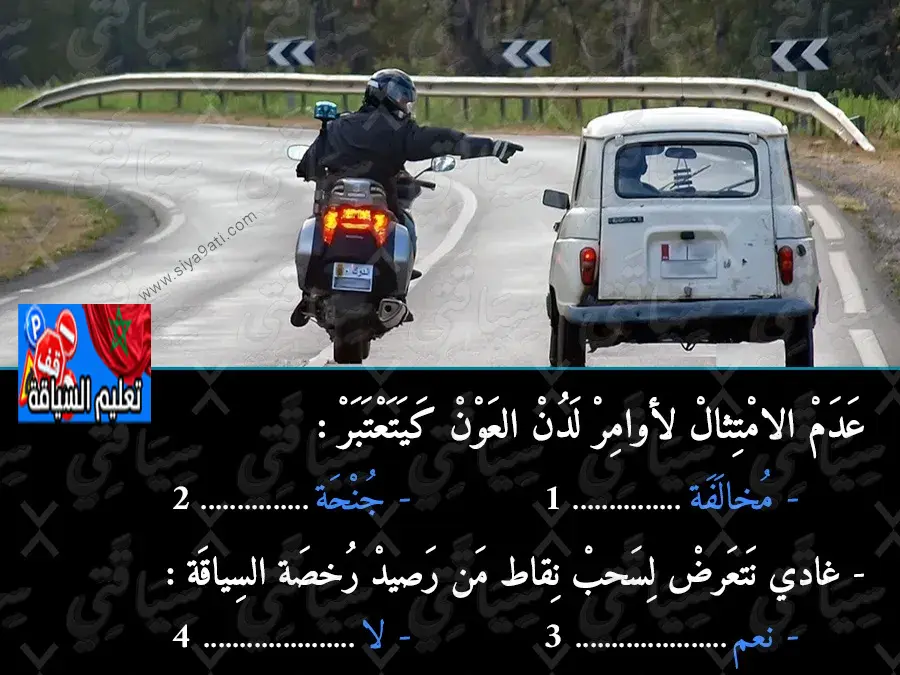
الكلافيي: 1–4 للجواب، Enter للتأكيد وللسؤال الجاي.
السلسلة 48 · النتيجة ديالك
0 / 40
السلسلة 48
السيارة (صنف B) · 40 سؤال، بالصوت، مع الجواب الصحيح والشرح.
السؤال 1
بيّن الجواب
الجواب الصحيح: 2 و 3
في مدونة السير المغربية، عندما لا يحترم السائق أوامر رجال أو نساء العون (أي الشرطة أو الدرك الملكي أو أي سلطة مخولة بتنظيم السير)، فهذا يعتبر جنحة وليس مجرد مخالفة بسيطة. هذه الجنحة تعتبر من الأفعال الخطيرة في نظر القانون لأنها تعرقل عمل السلطات المكلفة بحفظ النظام والسلامة على الطريق. العقوبة: إضافة إلى الغرامة المالية التي تحددها المحكمة، يتعرض السائق إلى خصم نقطتين (2) من رصيد رخصة السياقة، حسب النظام الجديد للنقط المعتمد في المغرب. الجواب الصحيح هو رقم 2 و 3.
السؤال 2
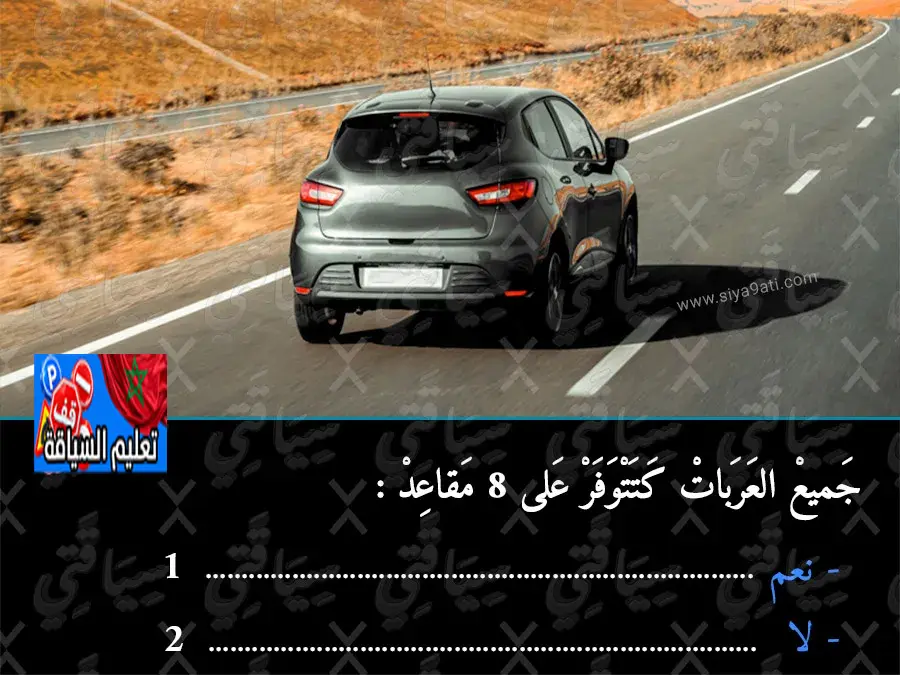
بيّن الجواب
الجواب الصحيح: 2
لا، ماشي جميع العربات فيها 8 بلايص. كاين سيارات صغيرة فيها 4 او 5 مقاعد فقط. كل سيارة أو عربة وعندها عدد المقاعد الخاص بها، كاين لي فيها أقل وكاين لي فيها أكثر. الجواب الصحيح هو رقم 2.
السؤال 3
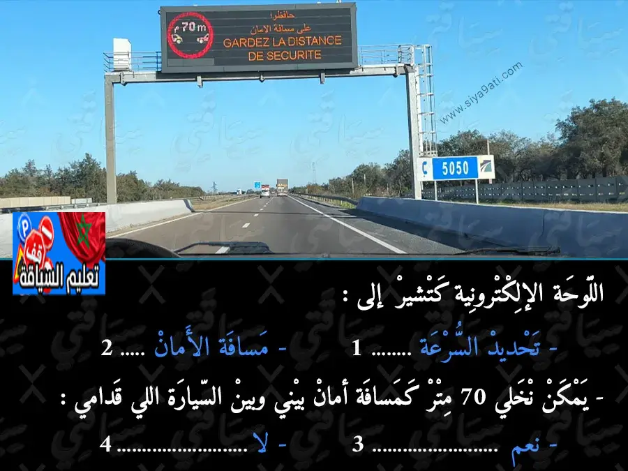
بيّن الجواب
الجواب الصحيح: 2 و 3
فاش نشوف لوحة إلكترونية في الطريق السيارة مكتوب فيها "حافظوا على مسافة الأمان" وكتحدد مسافة معينة (مثلاً: 70 متر)، هذا يعني: اللوحة الإلكترونية هنا ما كتحددش السرعة، بل كتذكرنا بمسافة الأمان اللي خاصنا نحافظو عليها مع السيارة اللي قدامنا. اللوحة الإلكترونية اللي فيها 70 متر، كتكون كتشير لمسافة الأمان اللي خاصنا نحافظو عليها مع السيارة اللي قدامنا، يعني خاصك تخلي على الأقل 70 متر بينك وبين السيارة اللي قدامك. ممكن تخلي أكثر، ولكن ممنوع تخلي أقل من هاد المسافة. الجواب الصحيح هو رقم 2 و 3.
السؤال 4
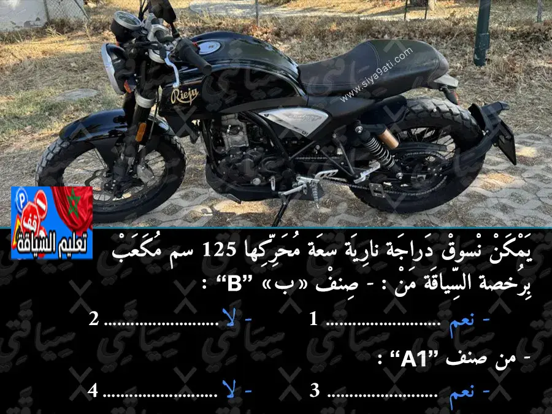
بيّن الجواب
الجواب الصحيح: 2 و 3
لا يمكن سياقة دراجة نارية بسعة 125 سم³ برخصة السياقة من صنف "B" (السيارات)، بل خاص تكون عندك رخصة من صنف "A1" أو أعلى. مدونة السير المغربية كتفرق بين أنواع رخص السياقة: رخصة "B" مخصصة للسيارات فقط، أما الدراجات النارية بسعة 125 سم³ خاصها رخصة "A1" على الأقل. إذن، الجواب الصحيح هو: لا يمكن سياقتها برخصة "B"، ويمكن سياقتها فقط برخصة "A1". الجواب الصحيح هو رقم 2 و 3.
السؤال 5
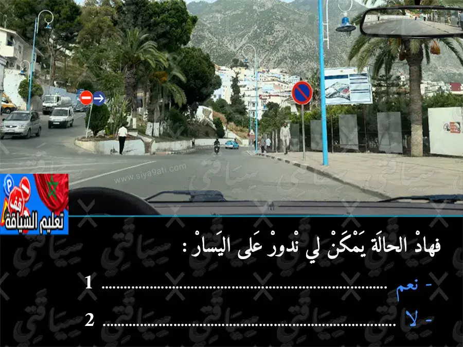
بيّن الجواب
الجواب الصحيح: 2
في هذه الحالة، لا يمكنني الانعطاف إلى اليسار. العلامة الطُرُقية على اليمين تعني "ممنوع التوقف" وهي لا تؤثر على قرار الانعطاف. العلامتان الأساسيتان هما على اليسار: الأولى، علامة منع المرور (دائرة حمراء بخط أبيض)، وتُفيد بأن الدخول إلى هذا الاتجاه ممنوع قطعًا. الثانية، العلامة الزرقاء ذات السهم الأبيض، وهي علامة إجبار، وتُلزمني بمواصلة السير إلى الأمام فقط. الجواب الصحيح هو رقم 2.
السؤال 6
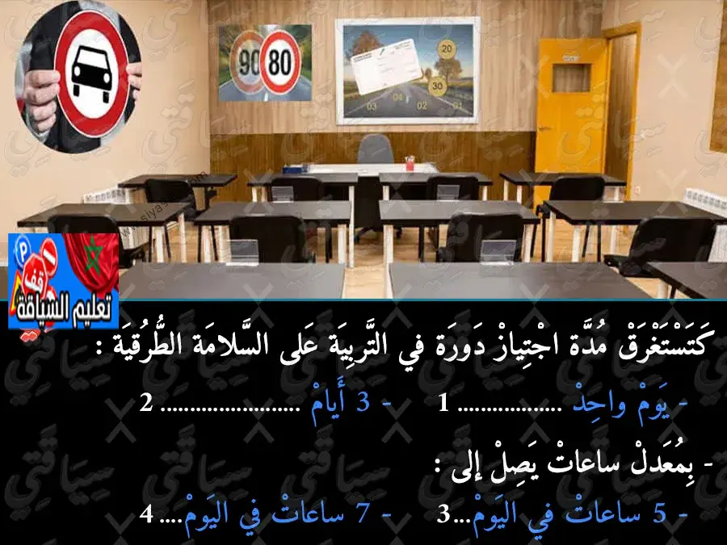
بيّن الجواب
الجواب الصحيح: 2 و 4
مدة اجتياز دورة في التربية على السلامة الطرقية تدوم 3 أيام، ويكون عدد ساعات التكوين عادة 7 ساعات في اليوم الواحد. هذا التكوين إجباري لكل شخص ارتكب بعض المخالفات الخطيرة، ويهدف إلى توعية السائقين بأهمية احترام قانون السير والوقاية من الحوادث. ومن بين أهم أهداف هذه الدورة التكوينية، أنه عند اجتيازها بنجاح يمكن للسائق استرجاع بعض نقاط رخصة السياقة التي فقدها بسبب المخالفات، وذلك حسب ما تنص عليه مدونة السير المغربية. الجواب الصحيح هو رقم 2 و 4.
السؤال 7
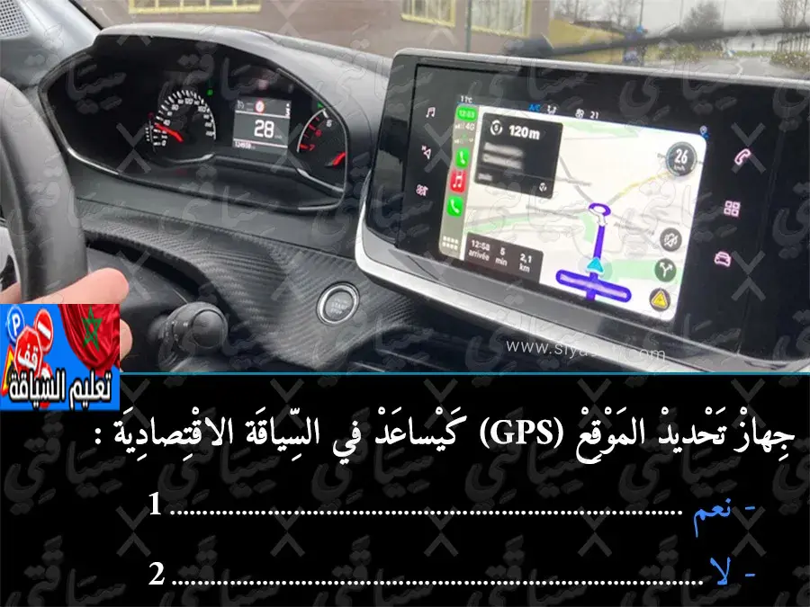
بيّن الجواب
الجواب الصحيح: 1
جهاز تحديد الموقع (GPS) فعلاً يُساعد في السياقة الاقتصادية. استعمال GPS يتيح للسائق معرفة الطرق الأقصر والأقل ازدحاماً، وتفادي الضياع أو الدوران غير الضروري، مما يساهم في تقليل استهلاك الوقود وتوفير الوقت. كما أن التخطيط المسبق للمسار عن طريق GPS يساعد في القيادة بشكل أكثر فعالية واقتصادية كيوريك الطرق اللي فيها أقل استهلاك ديال الكازوال وأسرع للوصول، وبهذا كتربح الوقت والوقود. وهو أمر منصوص عليه في توجيهات السلامة الطرقية الحديثة. لذلك، الجواب الصحيح هو: نعم، جهاز GPS يُساعد في السياقة الاقتصادية. الجواب الصحيح هو رقم 1.
السؤال 8
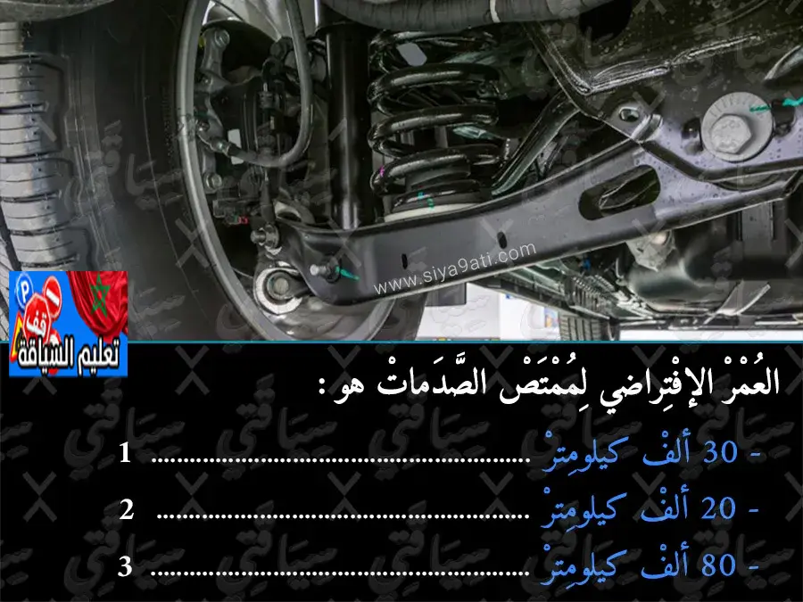
بيّن الجواب
الجواب الصحيح: 3
العمر الافتراضي لممتص الصدمات في السيارة غالباً هو حوالي 80 ألف كيلومتر. هذا يعني أنه بعد قطع السيارة لمسافة تقارب 80.000 كلم، يصبح من الضروري فحص ممتص الصدمات وربما تغييره للحفاظ على سلامة القيادة وراحة الركاب. هذا المعدل يمكن أن يختلف حسب نوع السيارة وطريقة الاستعمال، لكن في الغالب يُعتبر 80 ألف كيلومتر هو العمر الافتراضي الأكثر شيوعاً حسب توصيات الشركات المصنعة. الجواب الصحيح هو رقم 3.
السؤال 9
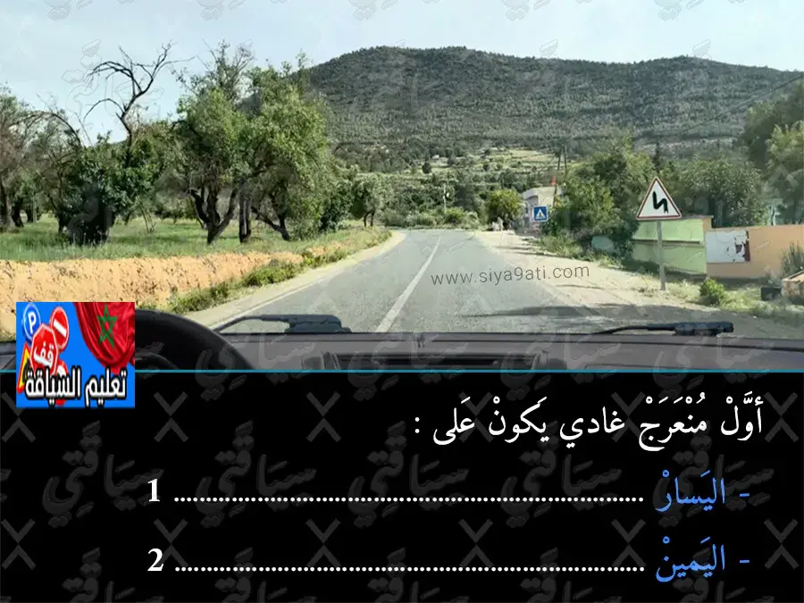
بيّن الجواب
الجواب الصحيح: 1
نتواجد خارج المجال الحضري، إذن فإن خطر المنعرجات المتتالية يتواجد على بعد 150 متر. وأول منعرج كما توضحه علامة الخطر سوف يكون على اليسار. الجواب الصحيح هو رقم 1.
السؤال 10
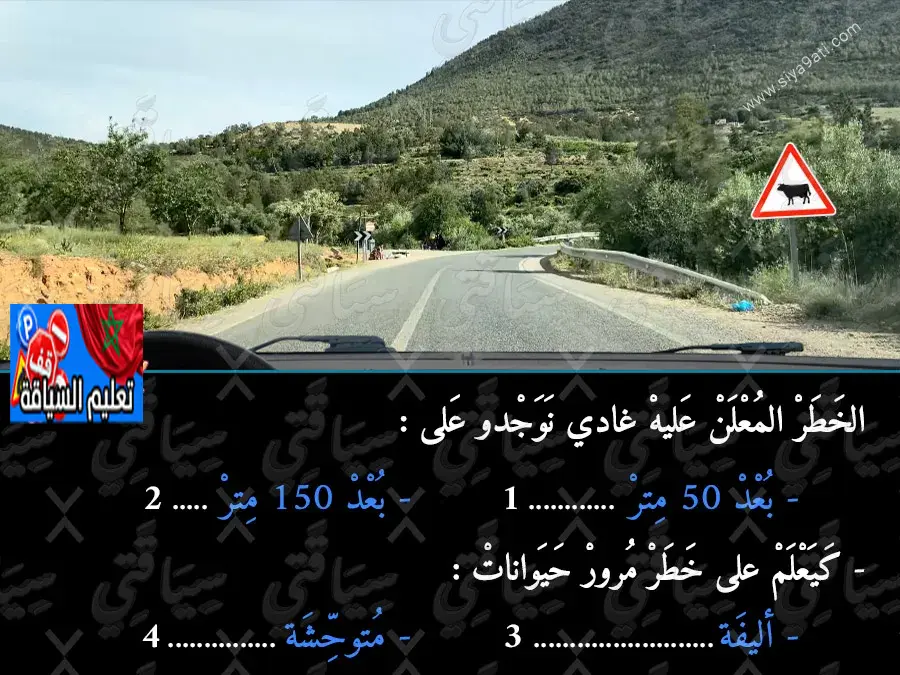
بيّن الجواب
الجواب الصحيح: 2 و 3
عندما نكون خارج المجال الحضري، فإن الخطر المعلن عليه في العلامة الطُرُقية يوجد عادة على بعد 150 متر من مكان وضع العلامة، حسب قانون السير المغربي. إذا كانت العلامة الطُرُقية فيها صورة بقرة، فهذا يعني خطر مرور حيوانات أليفة (مثل الأبقار أو الأغنام)، وليس حيوانات متوحشة. إذن، يجب الانتباه جيداً في هذه الحالة والاستعداد لوجود حيوانات أليفة على الطريق، والخطر سيبدأ بعد 150 متر من العلامة. الجواب الصحيح هو رقم 2 و 3.
السؤال 11
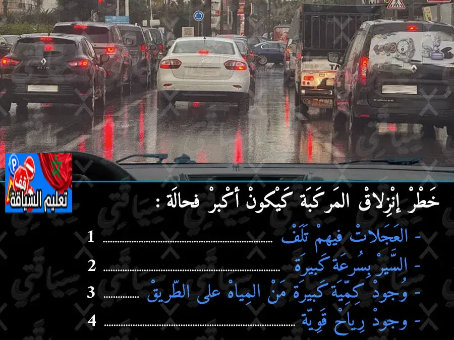
بيّن الجواب
الجواب الصحيح: 1 و 2 و 3
إذا كانت العجلات فيها تلف أو غير صالحة، فهذا يؤثر بشكل كبير على ثبات السيارة على الطريق، ويجعلها أكثر عرضة للانزلاق. عند السير بسرعة كبيرة، ينخفض الثبات وتزداد صعوبة التحكم في السيارة، ما يزيد من احتمال الانزلاق. عند وجود كمية كبيرة من المياه على الطريق، يمكن أن تتسبب في فقدان العجلات للتماس مع الأرض، فيصبح الانزلاق سهلاً جداً. أما الرياح القوية، فهي تؤثر أساسًا على اتجاه السيارة وقدرتها على البقاء في المسار الصحيح، لكنها لا تؤدي مباشرة إلى انزلاق العجلات على الطريق، بل قد تدفع السيارة جانبياً، لكن الانزلاق يكون غالباً نتيجة لتلف العجلات أو السرعة أو وجود الماء. الجواب الصحيح هو رقم 1، 2 و 3.
السؤال 12
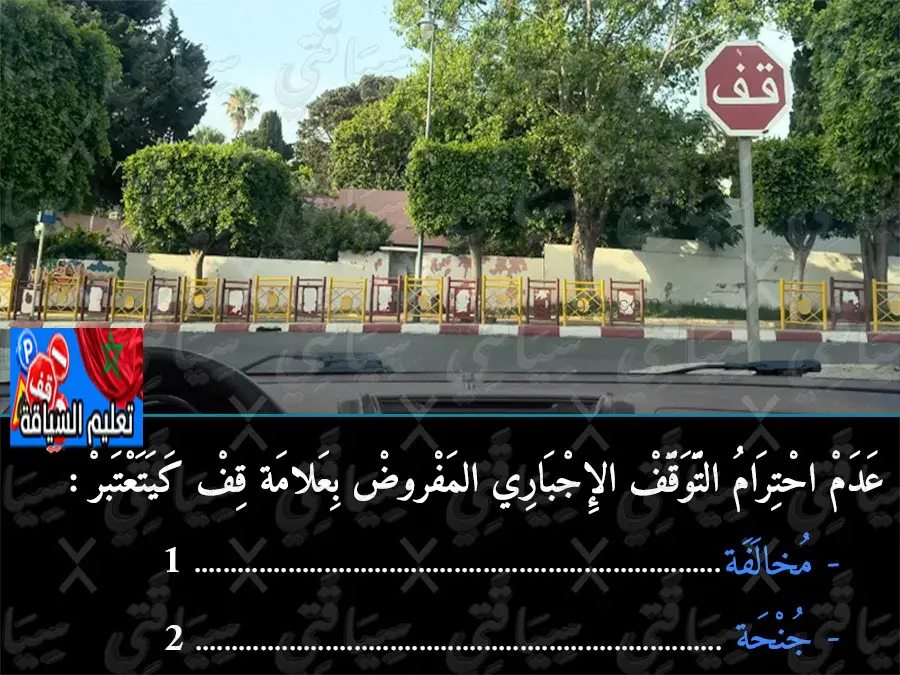
بيّن الجواب
الجواب الصحيح: 1
عدم احترام التوقف الإجباري المفروض بعلامة "قف" أو الإشارة الحمراء، يُعتبر من مخالفات الدرجة الأولى في مدونة السير المغربية. هذا يعني أن السائق يتعرض لغرامة مالية قدرها 700 درهم، بالإضافة إلى سحب 4 نقاط من رصيد رخصة السياقة دياله. لهذا من الضروري احترام علامة "قف" والإشارات الضوئية الحمراء لتجنب العقوبات وحماية السلامة على الطريق. الجواب الصحيح هو رقم 1.
السؤال 13
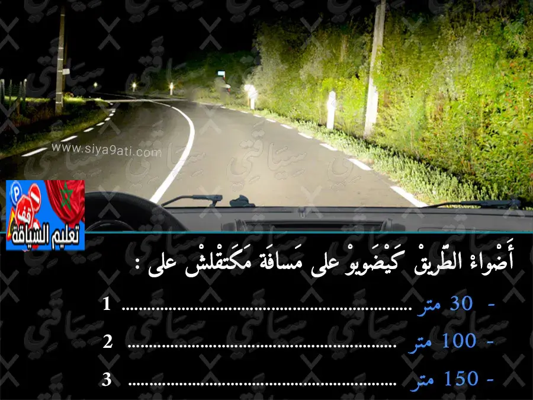
بيّن الجواب
الجواب الصحيح: 2
أضواء الطريق كتضوي على مسافة 100 متر قدام السيارة، ولكن هاد الأضواء ممنوعة داخل المجال الحضري. كنستعملوها فقط خارج المدينة وبحذر، وماشي إلا كان قدامي شي سيارة أو مستعمل آخر للطريق، خاصني نرد البال. الجواب الصحيح هو رقم 2.
السؤال 14
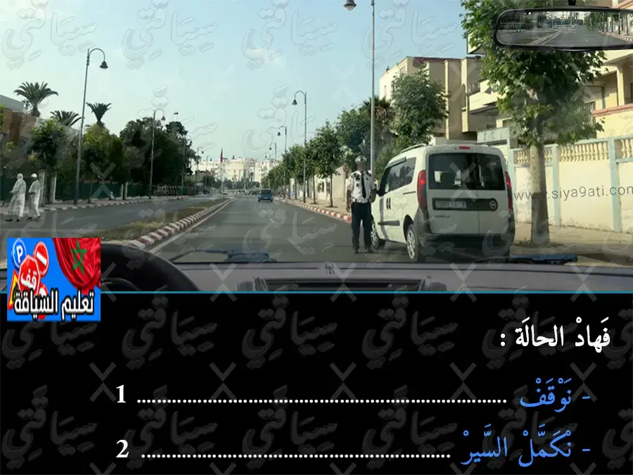
بيّن الجواب
الجواب الصحيح: 2
في هذه الحالة، بما أن رجل الأمن لا يشير إليك بالتوقف وماكاين حتى إشارة تدل على أنك خاصك توقف، خاصك تكمّل السير ديالك بشكل عادي وتحترم فقط قانون السير والإشارات الطرقية. الوقوف كايكون فقط إذا أعطاك رجل الأمن إشارة واضحة بذلك. الجواب الصحيح هو رقم 2.
السؤال 15
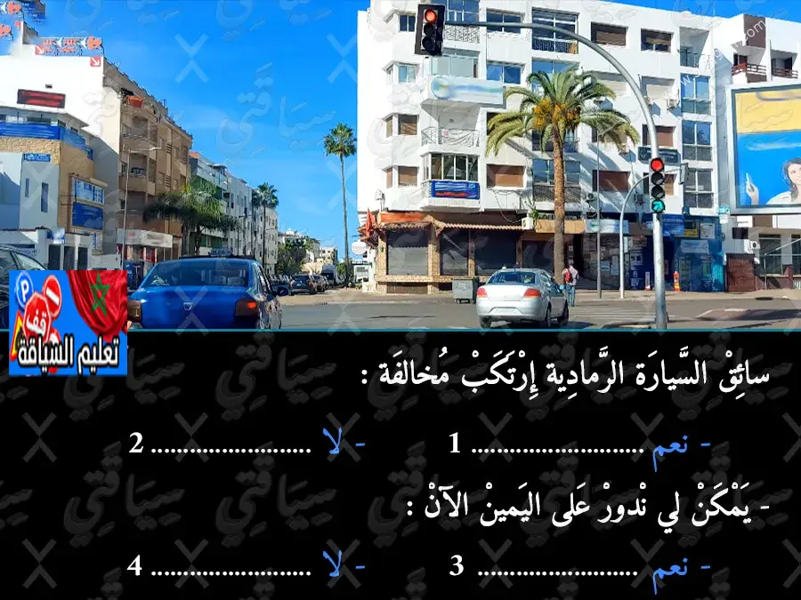
بيّن الجواب
الجواب الصحيح: 2 و 3
الإشارة الضوئية الرئيسية حمراء، لكن يوجد إشارة ضوئية تكميلية خضراء على شكل سهم نحو اليمين، فهذا يعني يُسمح لك بالانعطاف إلى اليمين فقط، حتى ولو كانت الإشارة الرئيسية حمراء. إذن، سائق السيارة الرمادية لا يرتكب أي مخالفة إذا انعطف على اليمين في هذه الحالة، لأن السهم الأخضر يسمح له بذلك. كما انه يمكنني أيضا إكمال السير والانعطاف على اليمين كذلك لان السهم الاخضر على اليمين يسمح لي بذلك. الجواب الصحيح هو رقم 2 و 3.
السؤال 16
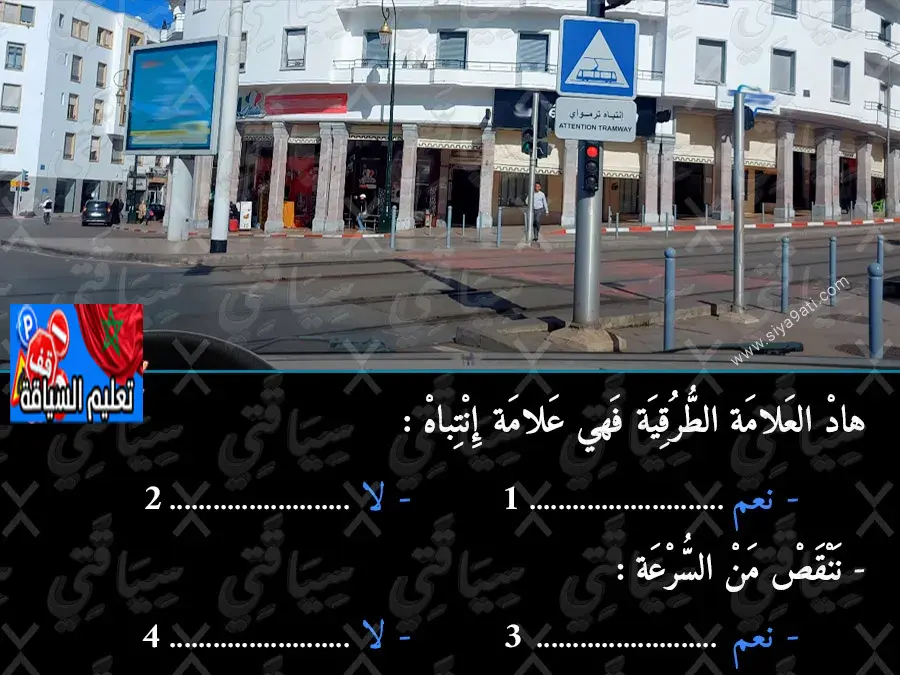
بيّن الجواب
الجواب الصحيح: 1 و 3
نعم، هذه العلامة الطرقية هي علامة انتباه وتنبيه للخطر الموجود، وفي هذا الحالة الخطر هو وجود طريق خاص بالترامواي. في مثل هذه الحالات، يجب دائماً الإنقاص من السرعة وزيادة الانتباه، خاصة عند اقتراب ملتقيات الطرق أو أي خطر على الطريق. احترام هذه العلامات ضروري للسلامة ديالك وسلامة باقي مستعملي الطريق. الجواب الصحيح هو رقم 1 و 3.
السؤال 17
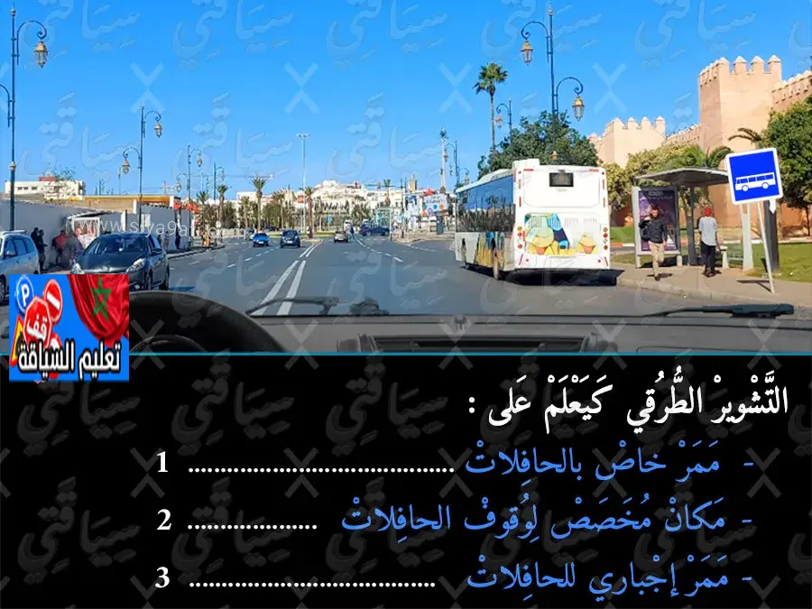
بيّن الجواب
الجواب الصحيح: 2
العلامة الطرقية المربعة تعني أن هناك مكان مخصص لوقوف الحافلات فقط، وغالبًا كتكون فيه أماكن للجلوس للركاب اللي كيستناو الحافلة. هاد العلامة هي علامة إرشاد، وكتعلم السائقين أن هاد البلاصة مخصصة لتوقف الحافلات، وماشي ممر إجباري أو خاص فقط بالعبور ديال الحافلات. الجواب الصحيح هو رقم 2.
السؤال 18
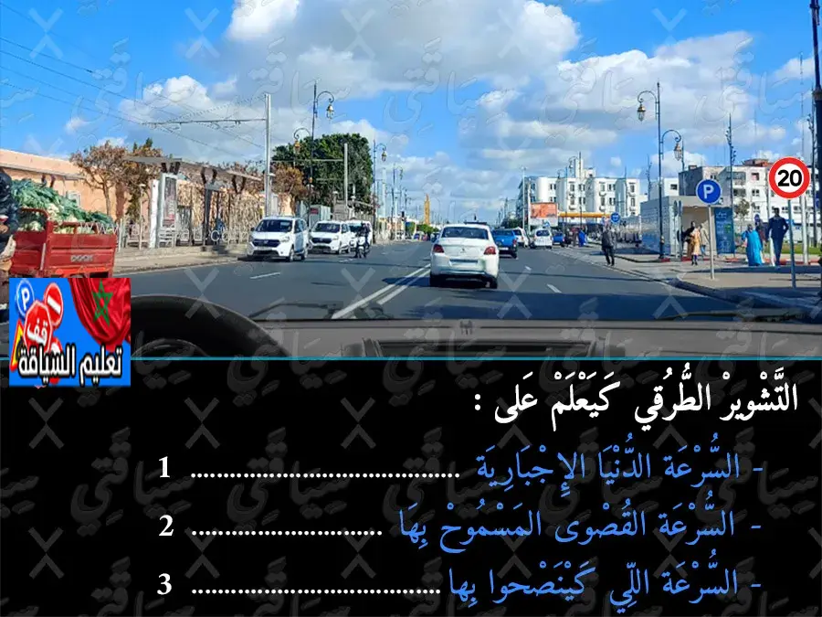
بيّن الجواب
الجواب الصحيح: 2
العلامة الطرقية الدائرية الحمراء التي فيها رقم 20، فهي علامة منع، وتدل على السرعة القصوى المسموح بها في هذا المقطع من الطريق. يعني ممنوع تتجاوز هذه السرعة. إذن، الجواب الصحيح هو: السرعة القصوى المسموح بها، الجواب الصحيح هو رقم 2.
السؤال 19
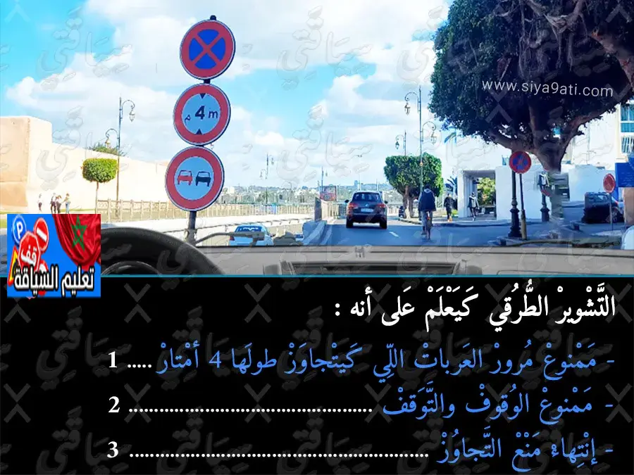
بيّن الجواب
الجواب الصحيح: 2
التشوير الطرقي اللي كاين فهاد الحالة فيه عدة علامات: أول علامة عمودية تعني "ممنوع الوقوف والتوقف" في هذا المكان. العلامة الثانية تعني ممنوع مرور العربات اللي يتجاوز علوها 4 أمتار (ليس الطّول). والعلامة الثالثة تعني ممنوع التجاوز. في هذا السؤال، الجواب الصحيح هو رقم 2: ممنوع الوقوف والتوقف.
السؤال 20
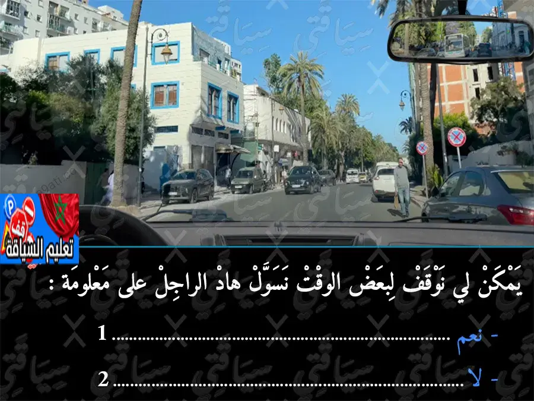
بيّن الجواب
الجواب الصحيح: 2
بما أن الطريق ضيقة ومزدحمة وفيها غير مسلك واحد للسير، إذا وقفت حتى لو لوقت قصير باش تسول شي حد، غادي تعرقل حركة السير وتسبب فالاكتظاظ. القانون كَيمنع الوقوف في هاد الحالات، خصوصاً إذا كان ذلك سيعيق مرور باقي السيارات. إذن، لا يمكنني الوقوف لبعض الوقت لسؤال عن معلومة في مثل هذا الطريق. الجواب الصحيح هو رقم 2.
السؤال 21
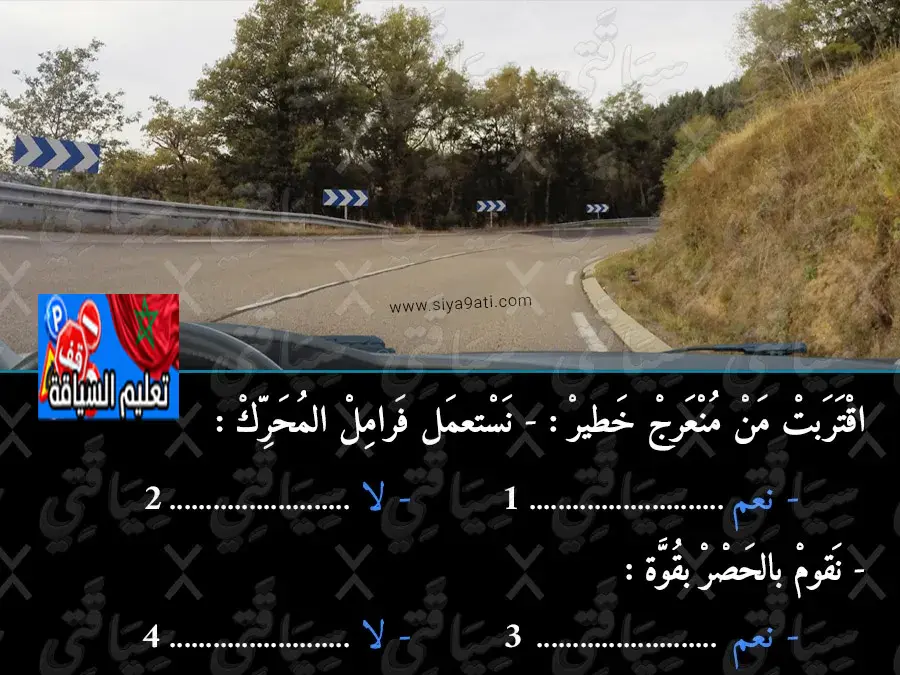
بيّن الجواب
الجواب الصحيح: 1 و 4
إلى كنت غادي فطريق هابطة بحال هاد الحالة اللي فصورة وفيها منعرجات خطيرة، خاصك تنقص من السرعة من قبل وتستعمل الفرانات ديال الموتور، يعني تهبط من مستوات السرعة وماشي بالفران بزاف. إلى فرانيتي بقوة وسط المنعرج، كاين خطر كبير تخرج السيارة من الطريق. إذن التّصرف السليم هو إستعمال فرامل المحرّك في مثل هذه الحالات ولا أقوم بالحصر بقوة. الجواب الصحيح هو رقم 1 و 4.
السؤال 22
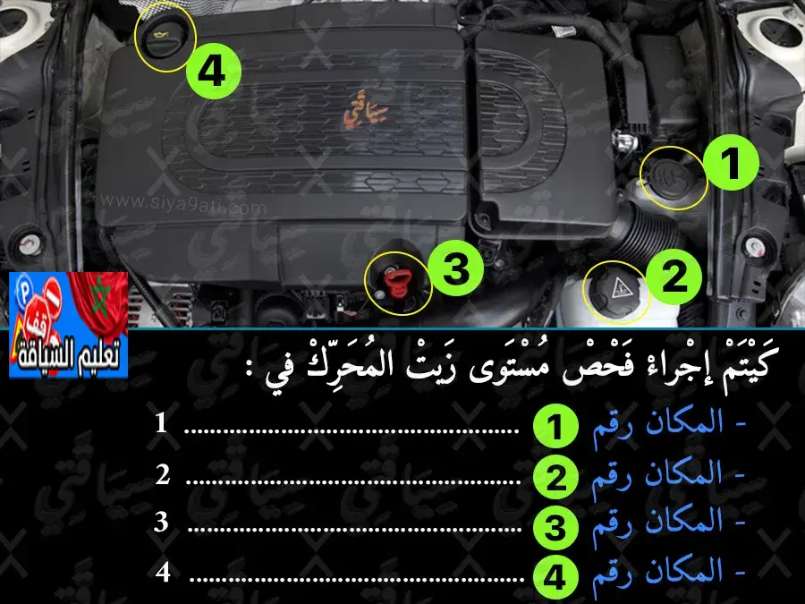
بيّن الجواب
الجواب الصحيح: 3
باش نعرف واش زيت المحرك واصل للمستوى المطلوب، خاصني نفحص الزيت فالطوموبيل من المكان رقم 3، حيث هذا هو المكان اللي كيتواجد فيه عصا قياس الزيت. كنسحب العصا، كننظفها، ثم نرجعها ونسحبها ثاني نشوف واش الزيت واصل للعلامة. الجواب الصحيح هو رقم 3.
السؤال 23
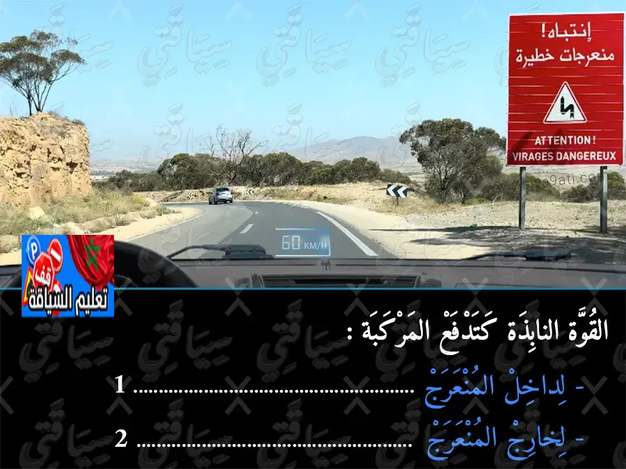
بيّن الجواب
الجواب الصحيح: 2
القوة النابذة كَتْدْفَع السيارة لخارج المنعرج. يعني ملي كتكون داير منعرج بسرعة، كتحس براسك أو الطوموبيل كيميل للخارج، هادشي بسبب القوة النابذة. لذلك خاصك تنقص السرعة قبل ما تدخل المنعرج باش تبقى السيارة تابتة وما تخرجش للطريق. إذن الجواب الصحيح هو رقم 2 لخارج المنعرج.
السؤال 24
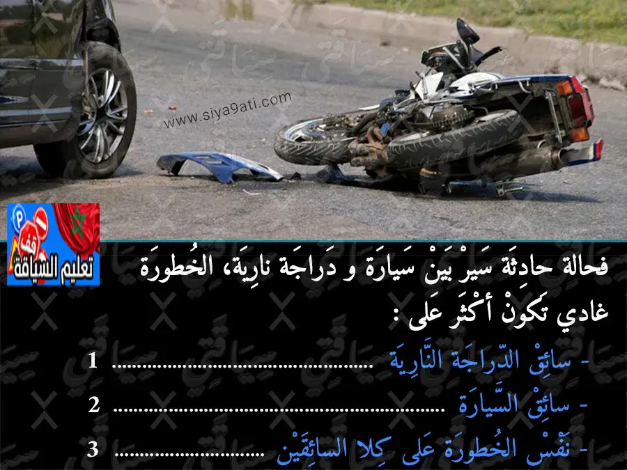
بيّن الجواب
الجواب الصحيح: 1
في حالة وقوع حادثة سير بين سيارة ودراجة نارية، الخطر يكون أكبر على سائق الدراجة النارية. حيث أن سائق الدراجة محمي أقل من سائق السيارة، وماعندوش نفس وسائل الحماية مثل حزام الأمان أو الهيكل ديال السيارة. لهذا حتى في حادثة بسيطة، الأضرار الجسدية عند سائق الدراجة النارية كتكون أخطر من السائق ديال السيارة. الجواب الصحيح هو رقم 1.
السؤال 25
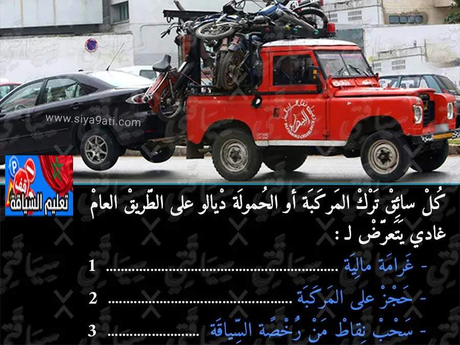
بيّن الجواب
الجواب الصحيح: 1 و 2
حسب المادة 166 من مدونة السير، كل سائق كيترك المركبة أو الحمولة ديالو في الطريق العمومية أو في ملحقاتها، كيتعرض لعقوبة مالية تتراوح بين 5.000 و10.000 درهم، كما أن هذا الفعل يعتبر جنحة وليس فقط مخالفة، وكيخصو يخلص حتى مصاريف إزاحة المركبة أو الحمولة. أيضا سوف يتم الحجز على المركبة. يعني العقوبة هنا هي غرامة مالية ويمكن حتى يتم نقل السيارة أو الحمولة للمحجز على حساب السائق. الجواب الصح ح هو رقم 1 و 2.
السؤال 26
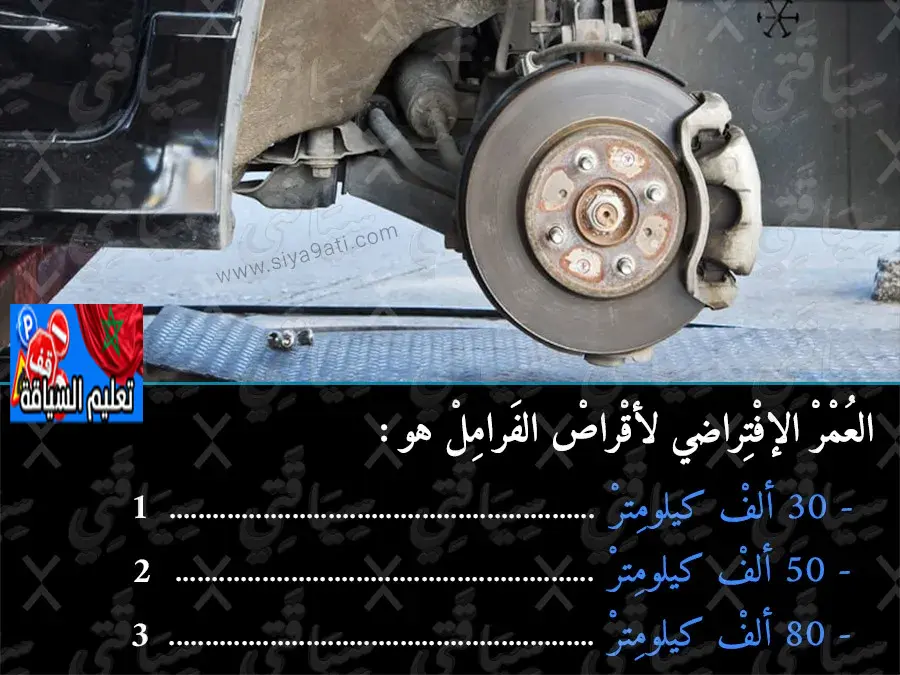
بيّن الجواب
الجواب الصحيح: 3
العمر الافتراضي لأقراص الفرامل غالباً ما يكون حوالي 80 ألف كيلومتر، لكن هذا الرقم يمكن يختلف حسب نوع السيارة وطريقة السياقة وجودة الأقراص. من الأفضل دائماً فحص حالة الفرامل بانتظام وعدم الاعتماد فقط على المسافة المقطوعة، لأن سلامة الفرامل أساسية لأمان السائقين. الجواب الصحيح هو رقم 3.
السؤال 27
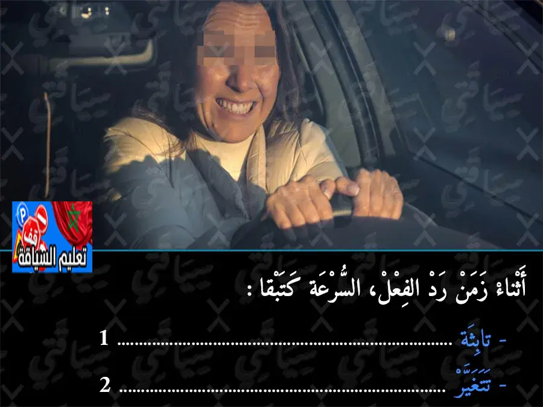
بيّن الجواب
الجواب الصحيح: 1
في زمن رد الفعل، السائق مازال ما مادار والو! يعني ما ضغطش على الفرامل ولم ينقص من السرعة. في هاد اللحظة، السيارة كتكمل بنفس السرعة بلا ما تنقص، لأن السائق غير باقي كيشوف الخطر ومازال ما تفاعلش معه. السرعة كتبقى ثابتة حتى يبدأ السائق في التصرف (مثلاً يدير فران أو ينقص السرعة). الجواب الصحيح هو رقم 1.
السؤال 28
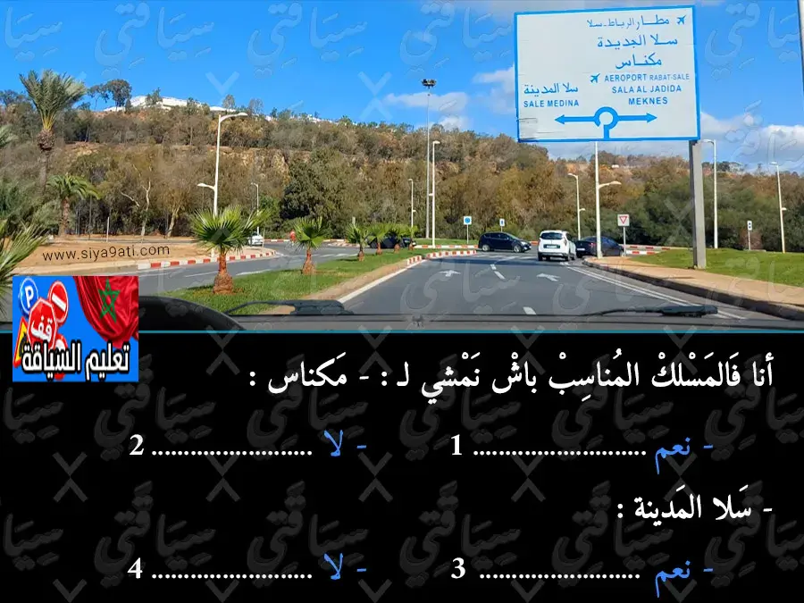
بيّن الجواب
الجواب الصحيح: 2 و 3
بما أنني كنسير فالمسلك اللي على اليسار، فهذا المسلك هو المناسب باش نمشي لمدينة سلا، حيث العلامات الطرقية كتوّجه السائقين حسب الاتجاه ديال كل مسلك. إذا بغيت تمشي لسلا المدينة، خاصك تبقى فاليسار، أما إذا بغيت تمشي لمكناس، خاصك تكون فمسلك اليمين. إذن، الجواب الصحيح: نعم، أنا فالمسلك المناسب لسلا المدينة ولست في المكان المناسب للذهاب إلى مكناس. الجواب الصحيح هو رقم 2 و 3.
السؤال 29
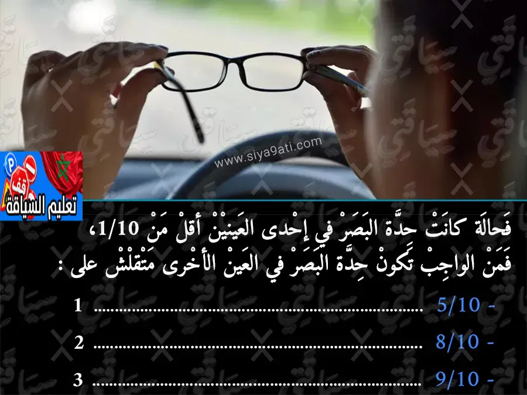
بيّن الجواب
الجواب الصحيح: 2
إذا كانت إحدى عينيك ضعيفة (أقل من 1/10)، العين الثانية خاصها تكون قوية بزاف، أي 8/10 أو أكثر، باش يسمح لك قانونياً تسوق. الجواب الصحيح هو رقم 2.
السؤال 30
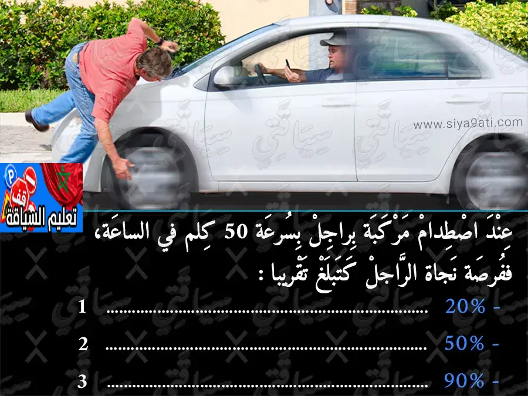
بيّن الجواب
الجواب الصحيح: 2
عندما تصدم سيارة راجل بسرعة 50 كلم في الساعة، فإن فرصة نجاته تكون تقريباً 50% فقط. هذا يعني أن نصف الحالات تقريباً يكون فيها خطر الموت أو الإصابة الخطيرة كبير جداً. لذلك، من الضروري دائماً تخفيض السرعة داخل المدن وأمام ممرات الراجلين، لأن ارتفاع السرعة حتى ولو كانت "عادية" يمكن أن تكون قاتلة. الجواب الصحيح هو رقم 2.
السؤال 31
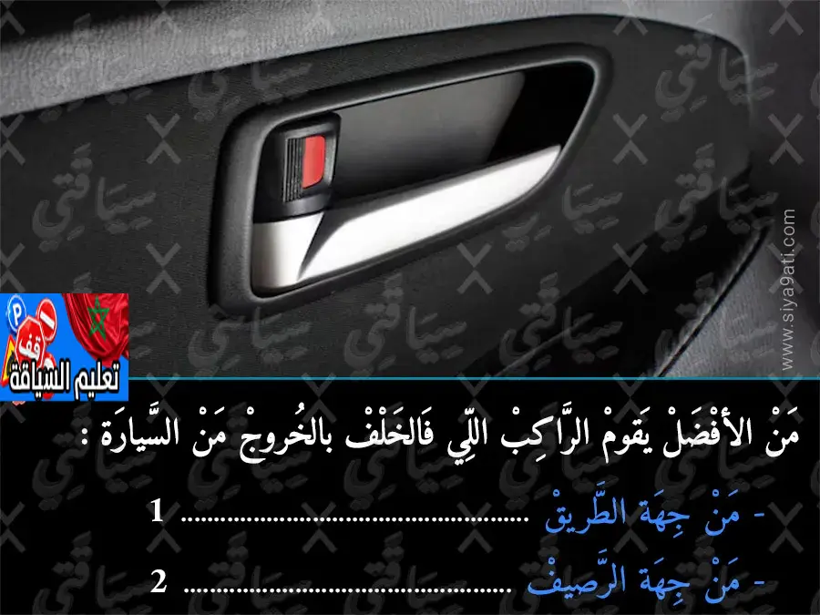
بيّن الجواب
الجواب الصحيح: 2
الأفضل يخرج الراكب من جهة الرصيف باش ما يتعرضش للخطر ديال الطريق والسيارات، ولكن حتى من جهة الرصيف خاص ينتبه مزيان، حيث ممكن يكون شي دراجة نارية أو راجل دايزين حدا الباب. إذن، قبل ما يفتح الباب خاصو يشوف مزيان ويتأكد أن الطريق خالية باش ما يصدم حتى واحد وما يتعرضش لخطر. الجواب الصحيح هو رقم 2.
السؤال 32
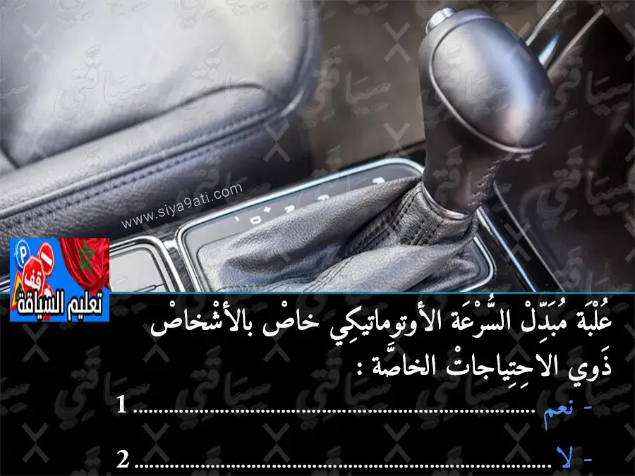
بيّن الجواب
الجواب الصحيح: 2
علبة مبدل السرعة الأوتوماتيكي (boîte automatique) ماشي خاصة غير بالأشخاص ذوي الاحتياجات الخاصة، بل كاين بزاف ديال السيارات الجديدة اللي فيها هذا النظام وكيستعملوه جميع السائقين، سواء عندهم احتياجات خاصة أو لا. هو فقط كيسهّل السياقة، لكن ماشي مخصص لفئة معينة. الجواب الصحيح هو رقم 2.
السؤال 33
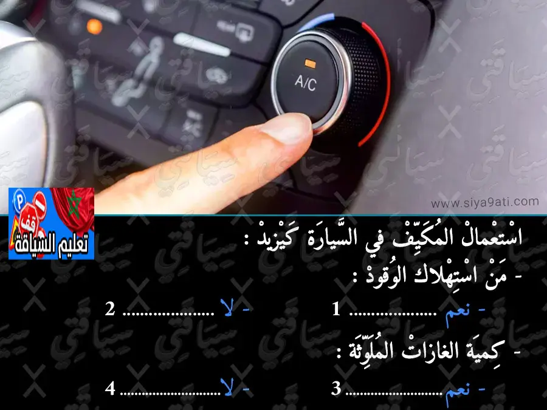
بيّن الجواب
الجواب الصحيح: 1 و 3
ملي كنستعمل المكيف فالطوموبيل، كيزيد استهلاك البنزين وكيرمي ثاني أوكسيد الكربون اللي هو ملوث. يعني خاصني نستعمل الكليماتيزور غير وقت الحاجة، وما نبردش الطوموبيل بزاف. أحسن حاجة هي نخلي الفرق بين درجة الحرارة ديال الكليماتيزور والحرارة اللي برا ما يفوتش 5 درجات، باش تكون القيادة اقتصادية وما نضرش البيئة. الجواب الصحيح هو رقم 1 و 3.
السؤال 34
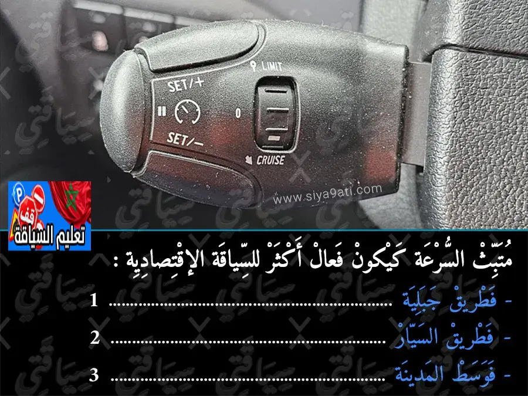
بيّن الجواب
الجواب الصحيح: 2
مثبت السرعة كيخلي السيارة محافظة على نفس السرعة، وهادشي مزيان فالطريق السّيار حيث كاين طريق مستقيم ومافيهش بزاف ديال الوقوف. ولكن فمدينة ما عندكش فيه فايدة حيت كاين بزاف ديال التوقف والانطلاق. وزيد عليها، حتى فالطرق الجبلية، مثبت السرعة ماشي مفيد، حيت الطريق فيها طلع وهبط ومنعرجات بزاف، والسائق خاصو ديما يتحكم فالسرعة وينقص ويزيد حسب الحاجة باش يكون آمن. إذن مثبت السرعة كايكون فعل أكثر وخصوصا في السياقة الإقتصادية في الطّريق السيّار. الجواب الصحيحهو رقم 2.
السؤال 35
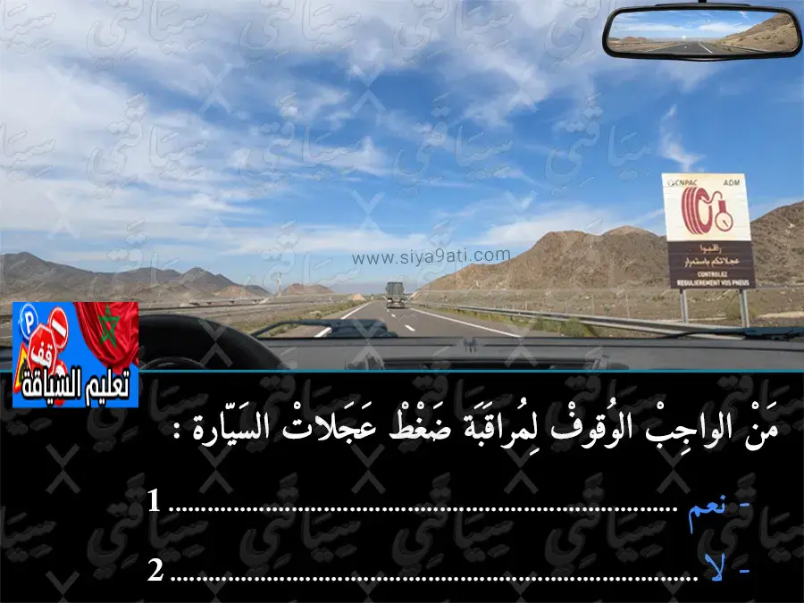
بيّن الجواب
الجواب الصحيح: 2
العلامة الطرقية اللي كتقول "مراقبة ضغط العجلات" هي علامة إرشادية وتذكيرية فقط، وماشي إلزامية. الهدف منها هو تنبيه السائق باش يتفكر يراقب ضغط العجلات ديالو، خصوصاً قبل الطرق الجبلية أو المسافات الطويلة، لكن الوقوف هنا ماشي واجب قانونياً. إذا بغيت توقف وتراقب في محطة الإستراحة القادمة مزيان، لانه في الطّريق السيار ممنوع الوقوف والتوقّف. الجواب الصحيح هو رقم 2.
السؤال 36
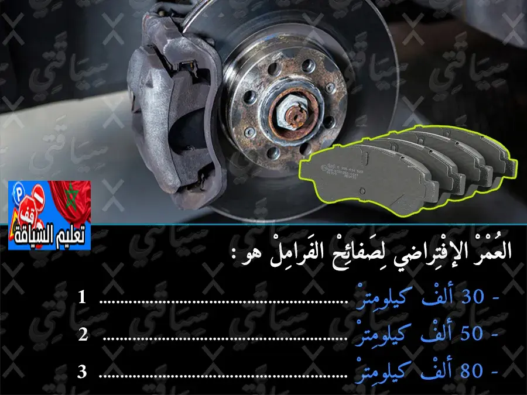
بيّن الجواب
الجواب الصحيح: 1
العمر الافتراضي لصفائح الفرامل غالباً كيكون حوالي 30 ألف كيلومتر. ولكن هاد الرقم يمكن يختلف حسب طريقة السياقة ونوع السيارة. من الأفضل تفقد صفائح الفرامل بانتظام لتجنب أي مشكل في الفرملة والسلامة. الجواب الصحيح هو رقم 1.
السؤال 37
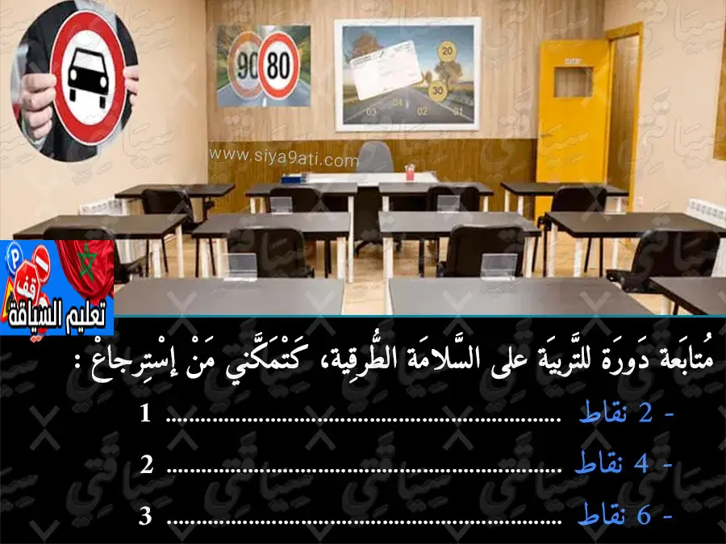
بيّن الجواب
الجواب الصحيح: 2
متابعة دورة للتربية على السلامة الطرقية كتمكّنك من استرجاع 4 نقاط من رصيد رخصة السياقة ديالك، بشرط تكمل الدورة بنجاح. هادشي كيعاون السائقين اللي فقدو بعض النقاط بسبب مخالفات باش يرجعو جزء منها ويحسنو سلوكهم فالطريق. الجواب الصحيح هو رقم 2.
السؤال 38
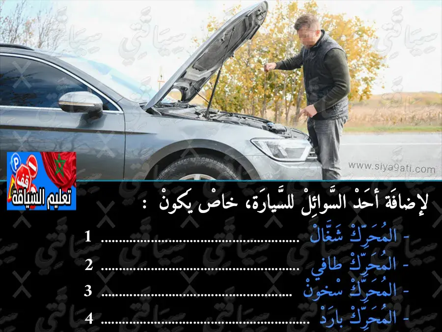
بيّن الجواب
الجواب الصحيح: 2 و 4
باش تزيد أو تفحص شي سائل فالطوموبيل (بحال الزيت أو ماء التبريد)، خاص الموتور يكون طافي وبارد. إلى حاولت(ي) تزيد(ي) الزيت والموتور شاعل، ممكن يطير الزيت فالموتور وما تعمرش المقياس ديالو بطريقة صحيحة. وحتى ماء التبريد، إلا فتحتي الكوفر والموتور شاعل أو سخون، كاين خطر كبير تحرق راسك بالبخار أو الماء الساخن. أما بعض السوائل بحال سائل الزجاج، ما عندها حتى معنى تزيدها والموتور شاعل. إذن، القاعدة هي: أي سائل بغيت تزادو فالطوموبيل، خاصك توقف الموتور وتخليه يبرد. الجواب الصحيح هو رقم 2 و 4.
السؤال 39
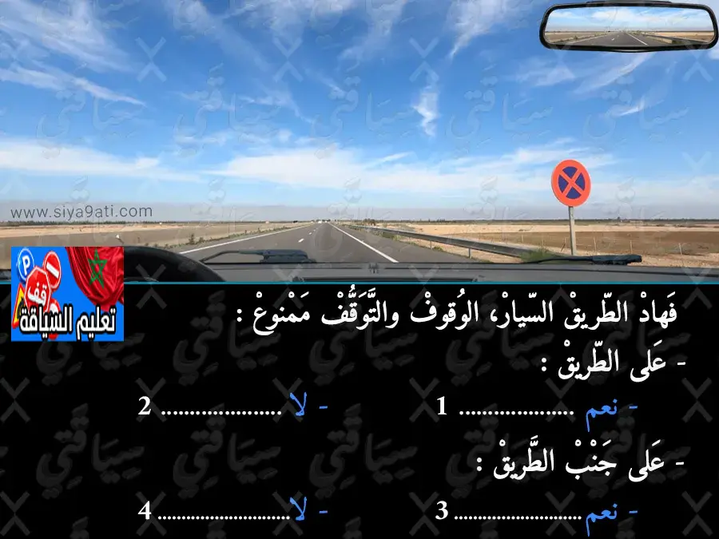
بيّن الجواب
الجواب الصحيح: 1 و 3
الوقوف أو التوقف فوق قارعة الطريق السيار أو على شريط التوقف العاجل أو حتى على المسالك الموصلة للطريق السيار ممنوع قانونياً، إلا في حالة الضرورة القصوى (مثلاً عطل مفاجئ). أي واحد خالف هاد القانون كيتعرض لمخالفة من الدرجة الثانية وغرامة مالية من 500 حتى لـ 1.000 درهم، وكيتسحب ليه 3 نقاط من رخصة السياقة. هذا الأمر كيتعمل لضمان سلامة السائقين وتفادي الحوادث الخطيرة فالطرق السيارة. الجواب الصحيح هو رقم 1 و 3. فنعم ممنوع الوقوف والتوقف.
السؤال 40
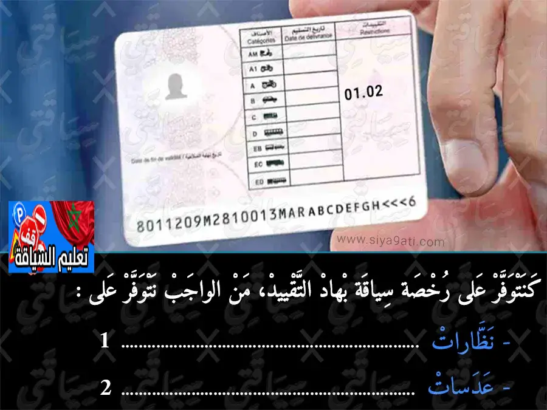
بيّن الجواب
الجواب الصحيح: 2
في رخصة السياقة، كاينين رموز دولية كتوضح نوع التصحيح البصري المطلوب. الرمز 01.02 يعني خاص السائق يستعمل عدسات لاصقة فقط أثناء السياقة، وماشي النظارات. إذا كان الرمز 01.01 فهنا خاصه النظارات. الجواب الصحيح هو رقم 2.